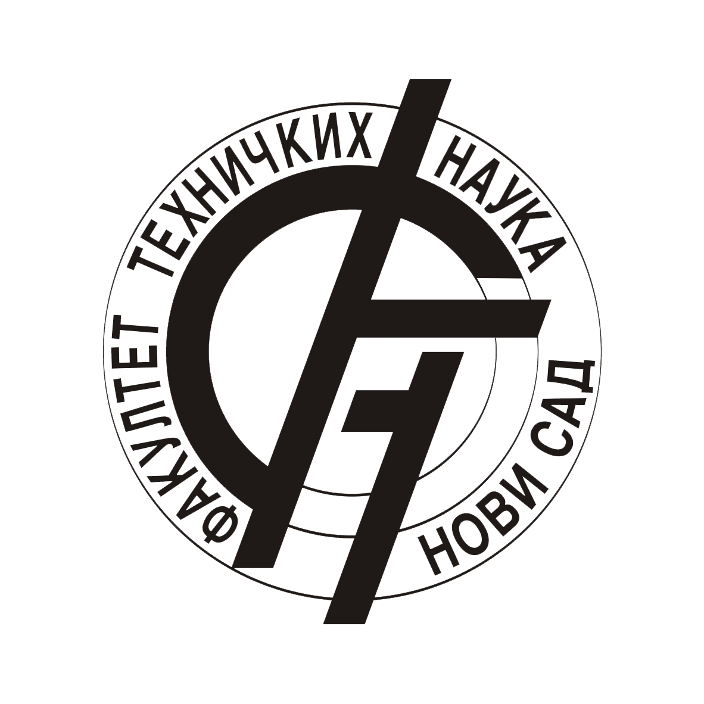
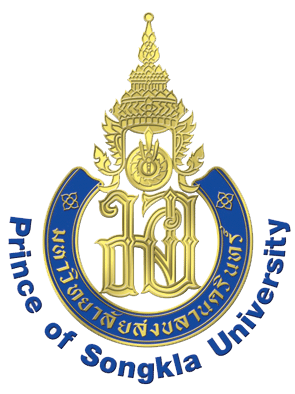
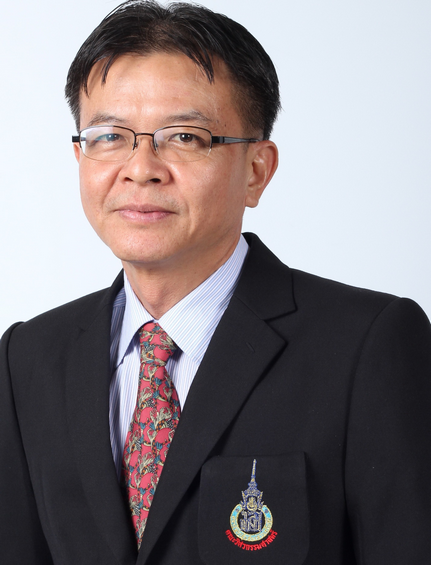

University of Novi Sad with 14 faculties, 4 scientific institutes, students health care, dormitories, restaurants, large sport centre and wide green areas is situated in campus on the left bank of the Danube on an area of 260,000 m2. More than 40,000 students attend the classes, of which 10,000 ones are students of Engineering having their education at the Faculty of Technical Sciences. Faculty of Technical Sciences is the largest faculty at the University of Novi Sad and in the Republic of Serbia. It is centrally located in the campus in 7 buildings with around 30,000 m2 of teaching and researching space. Department of Power, Electronics & Telecommunication where Power Electronics has long tradition is proud to be a starting place for many famous researchers in the filed, like Prof. Dushan Boroyevich, Prof. Emil Levi, Dr Milan Jovanovic, Prof. Aleksandar Prodic, Dr Dušan Graovac…
University of Novi Sad Faculty of Technical Sciences, Trg Dositeja Obradovića 6, 21000 Novi SadRepublic of Serbia e-mail: ftndean@uns.ac.rs, www: http://www.ftn.uns.ac.rs/
Prince of Songkla University (PSU), the oldest university in southern Thailand, consists of four campuses and one education service area which offer multifarious education programs consistent with the need of the communities. The university aims to establish excellence in researches, to provide academic services to communities as well as to take active role in preservation of national heritage in arts and culture, especially for those belonged to southern Thailand. For over forty years of existence, since its inception in 1967, with the stated vision of becoming a leading research-intensive university in Asia with the primary role of producing very capable graduates, providing excellent academic services and actively involving in preservation of national heritage in arts and culture, Prince of Songkla University, has accomplished much of its objectives.
Prince of Songkla University, Faculty of Engineering contact: Prince of Songkla University
The PSU-UNS International Conference is held every two years to address both fundamental and application issues of engineering and technology. It has been organized by the Faculty of Engineering, Prince of Songkla University, Thailand and Faculty of Technical Sciences, University of Novi Sad, Serbia. The previous meetings were held in:
1. Hat-Yai, Songkhla, Thailand, 2003 2. Novi Sad, Serbia, 2005 3. Phuket Island, Thailand, 2007 4. Novi Sad, Serbia, 2009 5. Phuket Island, Thailand, 2011 6. Novi Sad, Serbia, 2013 7. Phuket Island, Thailand, 2015
Prof. Dr. Rade Doroslovački, Dean

University of Novi Sad, Faculty of Technical Sciences Trg Dositeja Obradovića 6, 21000 Novi Sad, Serbia ftn_dean@uns.ac.rs
Assoc. Prof. Dr. Udomphon Puetpaiboon, Dean
Assoc. Prof. Dr. Udomphon Puetpaiboon, Dean Prince of Songkla University Faculty of Engineering, Hat Yai Thailand charun.b@psu.ac.th